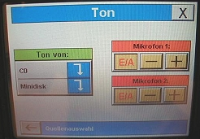

|
|
| - |
Die Mikrofone befinden sich im Medienkasten. Den Schlüssel
dafür erhalten Sie bei den Assistenten/innen der Studiengangsleitungen! |
| - |
Das Mikrofon können Sie mit den Druckknopf, der sich
auf der Unterseite des Mikrofons befindet, ein- bzw. ausschalten! |
| - |
Um die Batterie oder den Akku zu wechseln, schrauben
Sie den unteren Teil des Mikrofones auf! |
|
Touchscreen
|
| - |
Bei Touchscreen auf "Start" drücken! Das Mikrofon
ist sofort nach Einsteigen bei Touchpanel bereit! |
| - |
Drücken Sie den Button "Mikrofon" um die Lautstärke
zu regeln! |
|
Nach der Benützung
|
| - |
Steigen Sie beim Touchscreen aus allen Menüs aus und
bestätigen Sie die Frage "Wollen Sie wirklich aussteigen?" mit "JA"! |
| - |
Schalten Sie die Mikrofone aus! |
| - |
Verschließen Sie den Medienkasten! |
|

|